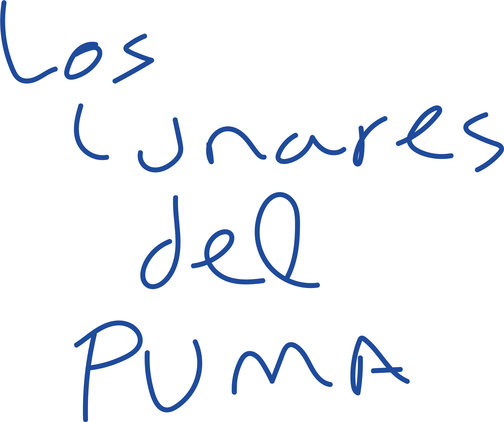

Teaser
A first glimpse into the world of Los lunares del Puma.
1 min 25 s · English subtitles
Dance · sound · performative rehearsal

What happens when flamenco footwork unfolds through horizontality and inversion?
Hip hop · flamenco · contemporary dance · Performance
Keep scrolling ↓Los lunares del Puma emerges from listening: Adrián Vega attends to his own sound, explores its cadences and recognises in his body an intercultural heritage born from the crossing of hip hop and folk traditions.
The piece centres on flamenco footwork, approached as rhythmic and poetic material that merges with the physicality of breaking and expands into the textures of contemporary dance. Footwork unfolds horizontally, through falling and inversion. From this territory, the piece ventures an answer to how much flamenco inhabits Vega’s body and how to approach that tradition without falling into stereotypes.
Within this gentle friction, residues, marks and traces emerge to shape a singular stage presence: the Puma. A figure that names difference and proposes a way of positioning oneself when the answer is not “I am flamenco”, but “I am a Puma”.
The lunares are this figure’s habitat. They are also spots. They can also be windows through which to look, activate and reproduce memories of movement. Rhythm, metre and pulse form a sonic and visual landscape that reveals the trace of the gesture and the intensity of its vibration.
Through this piece, Adrián Vega proposes an intimate, visceral experience within his research into dances that travel back and forth: an encounter between the body’s memory and the vibration of the present.


A space for listening.
Los lunares del Puma offers a voyeuristic experience in which any space can become the artist’s rehearsal studio. Metre and rhythm are the piece’s most prominent elements, alongside an exploration of the human body and its textures through the sound of the space in which it moves.
Today, being a streamer is commonplace, our relationship with cameras is part of everyday life, and sharing our activities and processes has become a habit. Adrián Vega draws on the accessibility of digital tools to explore the format of a performative video blog, where the virtual and the in-person converge to stimulate curiosity and explore the creative process as an artistic outcome in its own right.

«Los lunares del Puma emerges from the process of listening to myself, attending to my sound, understanding interculturality and the bodily and sonic heritage I have generated through my encounter with dance. The lunares are a habitat, a window to look through. The puma is my adolescence: accessing and understanding the codes of Hip Hop. It is also my post-adolescence, which gives me a contemporary perspective from which I can observe, coexist and let the puma look and relate to flamenco.»Adrián Vega
A first glimpse into the world of Los lunares del Puma.
1 min 25 s · English subtitlesSite specific version of Los lunares del Puma.
26 min 39 s · English subtitlesRecording of the piece at Escena Xixón.
43 min 51 s · English subtitlesA space for transmission: sharing the piece’s embodied research through a workshop.
Workshop · Transmission · 1 min 33 s
My name is Adrián Vega. I am a choreographer who graduated from the Institut del Teatre and a visiting teacher at Barcelona’s professional dance conservatory. I consider myself a post-Hip Hop artist, and my choreographic interests and practice are based on hybridisation, speculation on movement languages and floorwork.
Through my connection with flamenco and music, I am currently particularly interested in the sound of the body and how it can be used in dance and contemporary creation. In 2013, I immersed myself in the performing arts as a co-founder of the collective Iron Skulls Co, where we explored relationships between urban dance, contemporary dance and theatricality, developing an approach we call “theatrical breakin’”. My work has been selected for several international festivals, including Breakin’ Convention in London, Summer Dance Forever in Amsterdam, Summer Stage in New York and Hip Hop International in San Francisco.
Alongside Marina Pravkina on the Jazzbetween platform, and Juan Carlos Llérida in Postablao and Doce, I have worked in the empirical flamenco research laboratory: a way of approaching flamenco through experience that helps expand our understanding of folk traditions.
The events of 2020 changed my artistic vision, and I began exploring autobiographical themes, inverted flamenco and post-Hip Hop. In my first piece, “We are just okey”, the idea of falling led me to work on footwork through inversion and in complete silence, to understand the sound of impact through falling. This is where my interest in performativity, everyday life and brutalist aesthetics emerged. My second creation is a co-production between ICUB and Mercat de les Flors through the residency programme. The piece is called “Título provisional” and focuses on the intrinsic motivation of pre-adolescence in a performative video blog.
In 2022, I became a resident at La Caldera, where I found great poetic freedom. All my earlier work has nourished the project “Los lunares del Puma”, in which I create a long solo, an installation and two workshops focusing on the creative process rather than the outcome, and where I can talk about my relationship with cameras, the sound of the body and cultural appropriation.
A solo that can inhabit different spaces.
Contact